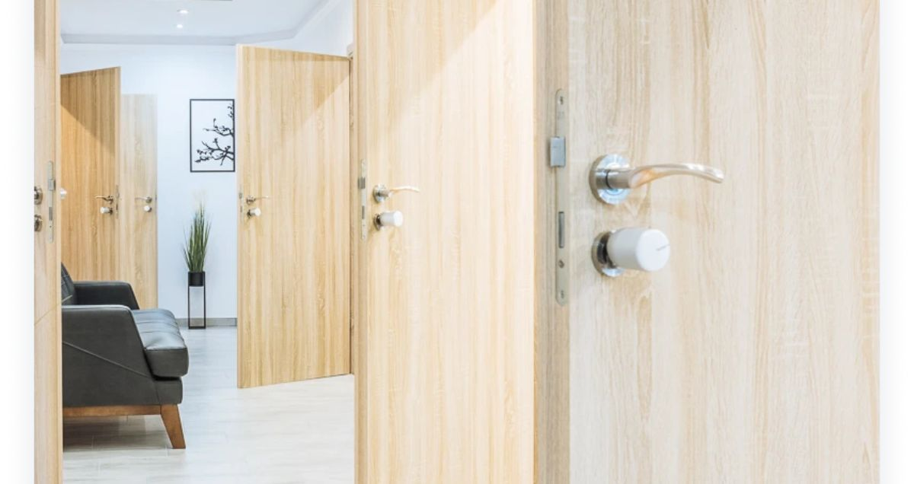

Puerta cerrada de golpe
Te has dejado las llaves dentro o se ha cerrado el aire. Abrimos sin daños y recuperas el acceso.
Te has quedado fuera de casa, del coche o del negocio. Llámanos y nos desplazamos cuanto antes a Santa Cruz, La Laguna, Candelaria, Radazul, Tabaiba, Tegueste y La Esperanza.

Cuando te quedas fuera, lo primero es no forzar nada: un tirón en falso o una palanca pueden dañar la hoja de la puerta y multiplicar la factura. Llámanos y te orientamos antes de mover nada.
Trabajamos con técnicas de apertura sin daños para no estropear ni la puerta ni la cerradura. Solo cuando es estrictamente necesario —por el tipo de bombín o por seguridad— sustituimos la cerradura, siempre avisándote antes.
Si te identificas con alguna de estas situaciones, llámanos: cuanto antes intervengamos, más fácil y económica será la solución.
Te has dejado las llaves dentro o se ha cerrado el aire. Abrimos sin daños y recuperas el acceso.
Abrimos y, si lo necesitas, cambiamos la cerradura para que nadie más pueda entrar.
La llave gira en falso o no entra. Diagnosticamos y reparamos o sustituimos el bombín.
Se ha partido la llave en la cerradura. Extraemos el resto y dejamos la cerradura operativa.
Apertura de vehículos para que recuperes tus llaves sin romper nada.
Persianas, candados y puertas de comercio: te abrimos para que puedas seguir trabajando.
Aperturas urgentes y cambios de cerradura por toda la zona metropolitana, a cualquier hora.



Llámanos o escríbenos por WhatsApp y dinos dónde estás. Nos ponemos en camino cuanto antes.